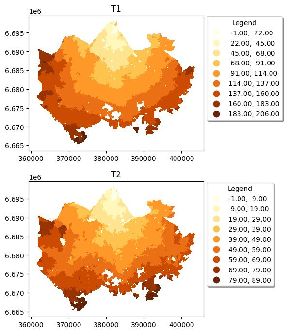

Access Viz
A spatial data analytics application for travel time insights in Helsinki.



Project Details
Access Wizard is an interactive spatial analytics tool built using Python and the Solara framework. It is designed to help users explore and analyze travel time accessibility across the Helsinki metropolitan area. The application provides a clean and intuitive user interface for visualizing accessibility patterns and supports planning decisions in transportation and urban development.
Tools & Technologies: Python, Solara, Pandas, GeoPandas, OpenStreetMap, Matplot